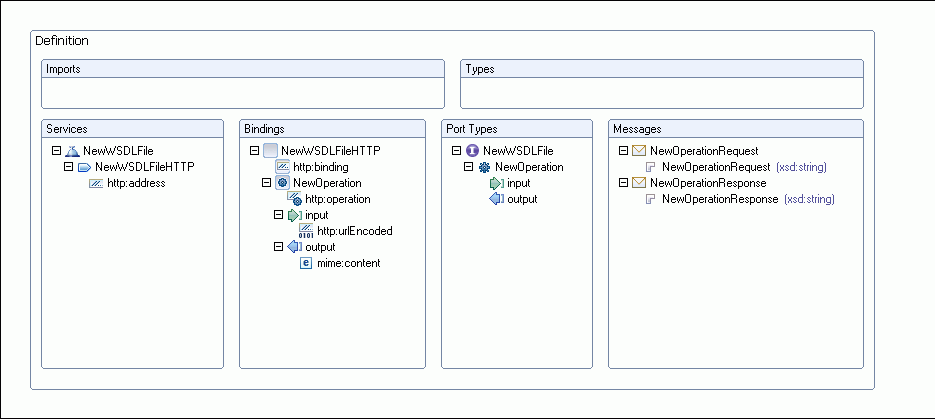

You can create a new, empty WSDL file, then edit it using the WSDL editor.
To create a WSDL file, follow these steps:
- Create a project to contain the WSDL document. It does not matter what kind of project you create.
- In the workbench, click File > New > Other > Web Services > WSDL. Click Next.
- Select the project or folder that will contain the WSDL file. In the File name field, type the name of the WSDL file, for example MyWSDLFile.wsdl. The name of your XML file must end in .wsdl
- Click Next.
- Enter the following information:
- Target namespace is the namespace for the WSDL file or accept the default (http://www.example.org/MyWSDLFile/). The target namespace is used for the names of messages and the port type, binding and service defined in the WSDL file. The value must take the form of a valid URI (for example, http://www.mycompany.com/myservice/)
- The Prefix is the prefix associated with the target namespace.
- Select Create WSDL Skeleton if you want the wizard to create the skeleton of the WSDL file. This will generate the WSDL elements required for your service, including bindings, ports and messages. You can then modify these to meet the requirements of your Web service.
- If you have chosen to create a WSDL skeleton, select the binding
options you want to use in the WSDL document. The options are SOAP and HTTP.
Use the SOAP protocol when you want to exchange structured and typed information.
Use the HTTP protocol when you want your application client to just request
or update information. If you select SOAP you can
then select the encoding style you want to use.
- Document literal. Document style messages, literal encoding. Use this style of binding when you want to send SOAP messages that can be validated by an XML validator. All the data types in the SOAP message body are defined in a schema, so the WSDL parts must point to schema elements.
- RPC literal. RPC style messages, literal encoding. Use this style of binding when you want to specify the operation method names in your SOAP messages so a server can dispatch the specified methods. Data types must be defined, so the WSDL parts must point to XSD types.
- RPC encoded. RPC style messages and SOAP encoding. Use this style of binding when you want to encode data graphs in your SOAP messages so a server can deserialize the object data. Data types must be defined, so the WSDL parts must point to XSD types.
- HTTP GET. A GET request fetches data from a Web server based on an URL value and a set of HTTP headers. Use this method when you want to retrieve information specified in the request.
- HTTP POST. A POST request sends additional data to the server, specified after the URL and the headers. Use this method when you want to send data enclosed in the body of the request.
- Click Finish. The WSDL file opens in the WSDL editor.
If you created a WSDL file with a skeleton using SOAP bindings, it should look similar to the following:

If you created a WSDL file with a skeleton using HTTP bindings, it should look similar to the following:
